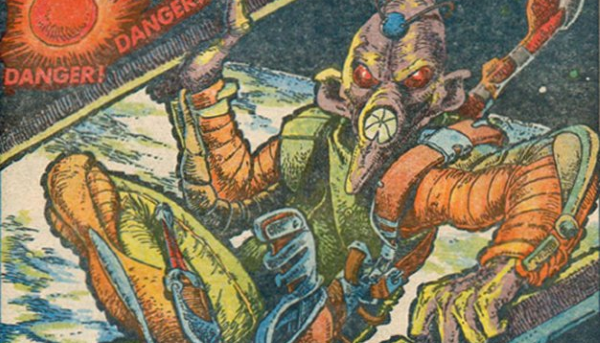

These covers had some additional text in the comic telling an associated story.
Art by Carlos Ezquerra
| Title | Parts | Pages | w indicates a wraparound coverCovers | Year(s) | Issues | Writer | Artist | Colourist | Letterer |
|---|---|---|---|---|---|---|---|---|---|
| For a Fistful of Groats | 1 | 0.5 | 1 | 1978 | SFS1 | Roy Preston | Kevin O'Neill | <-- | n/a |
| A Serious Case for Treatment | 1 | 4 | 1 | 1978 | 2KA'79 | unknown | Kevin O'Neill | <-- | n/a |
| The Alien Who Came in From the Cold | 1 | 0.5 | 1 | 1979 | 139 | [Starlord] | Carlos Ezquerra | <-- | n/a |
| [Alien Attack!] | 1 | 0.5 | 1 | 1981 | 196 | [Tharg] | Dave Gibbons | <-- | unknown |
| [Scott Jones - Space Ranger] | 1 | 0.5 | 1 | 1981 | 213 | unknown | Brian Bolland | <-- | unknown |
| Secret of the Bermuda Triangle | 1 | 0.5 | 1w | 1983 | 304 | [Tharg] | Massimo Belardinelli | <-- | n/a |
| Destruction of the Gambling Ship Miziz-Ippi IV | 1 | 0.5 | 1w | 1983 | 309 | unknown | Massimo Belardinelli | <-- | n/a |
| Tidal Terror on Torquan | 1 | 0.5 | 1w | 1983 | 311 | unknown | Massimo Belardinelli | <-- | n/a |
| year | episodes | pages |
| 1977 | 0 | 0 |
| 1978 | 2 | 4.5 |
| 1979 | 1 | 0.5 |
| 1980 | 0 | 0 |
| 1981 | 2 | 1 |
| 1982 | 0 | 0 |
| 1983 | 3 | 1.5 |
| 1984 | 0 | 0 |
| 1985 | 0 | 0 |
| 1986 | 0 | 0 |
| 1987 | 0 | 0 |
| 1988 | 0 | 0 |
| 1989 | 0 | 0 |
| 1990 | 0 | 0 |
| 1991 | 0 | 0 |
| 1992 | 0 | 0 |
| 1993 | 0 | 0 |
| 1994 | 0 | 0 |
| 1995 | 0 | 0 |
| 1996 | 0 | 0 |
| 1997 | 0 | 0 |